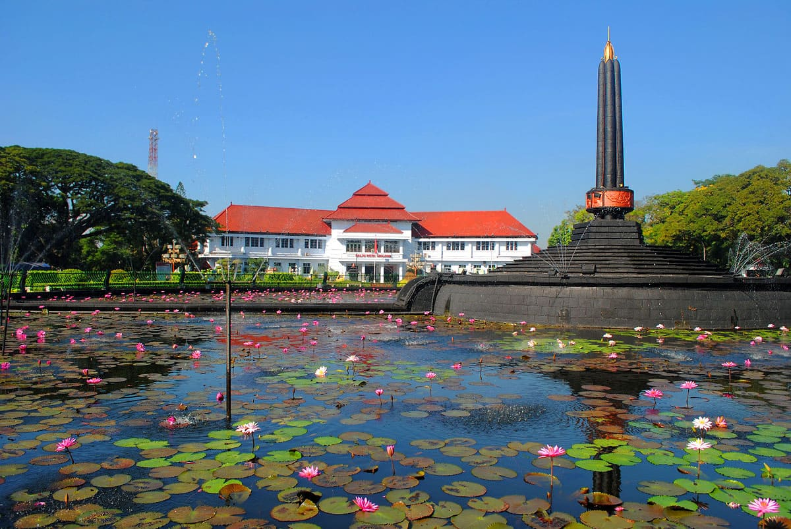

My Hometown, Malang

Malang is such a beautiful city. I was born and raised here. This city is located in Jawa Timur, Indonesia, about 2 - 3 hours from Surabaya. This city is so small that you can go around it in just about 30 - 60 minutes. This city is also known for its cold condition, compared to Surabaya which is considered one of the hottest city in Indonesia. That's why this is the best place for people from Surabaya and around to run away and relax a bit.